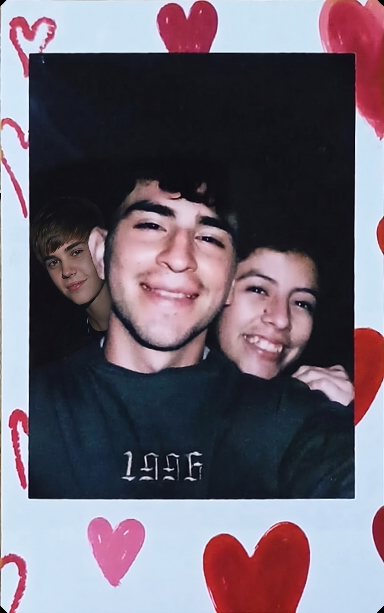

Para mi persona favorita en el mundo,
Aveces me pregunto como fue que estando siempre tan cerca uno del otro, no habiamos coincidido antes. Imaginate viviendo en el mismo lugar, mismos colegio, hasta en el mismo gym, creo que el destino nos estaba guardando para algo muy grande. Y que mas grande que el amor que ambos sentimos y que se ve en todas partes eso me hace sentir tan especial, soy tan afortunado de tenerte en mi vida mi cielo.
Gracias a Dios y a la vida por haberte puesto en mi camino, y me haya honrado con las bendiciones que eso implico, siempre me sentire en deuda con el por que me dio esta linda oportunidad y prometo no desaprovecharla y hacerte sentir la persona mas amada de esta tierra.
Estos 10 meses a tu lado han significado que lo nuestro es diferente, algo por lo que vale la pena seguir adelante, no hay forma de describir lo que siento y me haces sentir cuando estoy contigo, supongo que no hay palabras para describirlo pero me encanta. Aunque hallan momentos dificiles prometo quedarme siempre de tu lado, del lado bueno de la historia. Felices 10 mesesotes a tu lado mi amor, que los que vengan sean igual de hermosos no olvides que te amo 10 MILLONES DE VECES.
De todo corazón,
Siempre juntos
Nuestro Corazón



.jpeg)
.jpeg)

.jpeg)